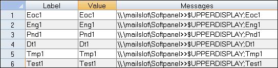

iTest User's Guide
The following document lists VCL string functions.
Returns the hexadecimal representation of a single ASCII character. Only the first character of a multi-character string is resolved.
Syntax
ascii2hex(<character>)
Example
SET strChannel ascii2hex("A")
SET strChannel ascii2hex("Abc")
* In both examples, strChannel is set to the string 41.
Converts the string argument to a floating-point number.
Syntax
atof(<string>)
Example
VCLSTR str SET str "77.99" VCLNUM num SET num atof(str)
Reverses the order of bytes in a string, where a byte is considered to be two characters long. This function requires an even number of characters in the supplied string or it returns an empty string. This function is useful for swapping adjacent bytes in a string of hex bytes.
Syntax
byteswap(<string>)
Example
SET vsStr byteswap("007B")
SET vsStr byteswap("ABCDEFGH")
In the first example, vsStr is set to the string "7B00".
In the second example, vsStr is set to the string "GHEFCDAB".
Compares the values of two strings, up to and including the last character of the second parameter. A "1" is returned if the strings are equal. A "0" is returned if the strings are not equal. This comparison is case sensitive.
Syntax
compare(<string1>,<string2>)
Example 1
SET voNumber compare(vsString1,vsString2) * Where vsString1 contains the string "True" and vsString2 contains the string "true". * In this example, the two strings are not exactly the same, so voNumber would be set to 0.
Example 2
#if compare(vsString1,"Yes")
SET voNumber 99
#endif
* Where vsString1 contains the string "Yes".
* In this example, the condition would be true, so voNumber would be set to 99.
Same as compare except it ignores the case.
Syntax
comparenocase(<string1>,<string2>)
Example
SET voNumber comparenocase(vsString1,vsString2) * Where vsString1 contains the string "True" and vsString2 contains the string "true". * In this example, the two strings are considered the same, so voNumber would be set to 1.
Concatenates two strings to form a new string and returns the value of the new string.
Syntax
concat(<string1>,<string2>)
Example
SET vsString1 concat(vsString2,vsString3) * Where vsString2 contains the string "System" and vsString3 contains the string "Busy". * In this example, the two strings are put together into vsString1 as "SystemBusy".
Returns the value of a numeric or string channel whose name is stored in the given string channel.
Syntax
getfromstring(<channel>)
Example 1
SET voNumber getfromstring(vsString) * Where vsString contains the string "voSource" which is the name of a channel containing a numeric value (e.g., 1). * In this example, voNumber would be set to the current numeric value of the channel voSource.
Example 2
SET vsResult getfromstring(vsString) * Where vsString contains the string "vsSource" which is the name of a channel containing a string value (e.g., "ItWorks!"). * In this example, vsResult would be set to the current string value of the channel vsSource.
Returns the ASCII representation of the character string, assuming that string returns a hexadecimal value.
Syntax
hex2ascii(<string>)
Example
SET vsStr hex2ascii("41")
* In this example, vsStr is set to "A".
Returns the numeric value of a string assuming that string represents a hexadecimal value.
Syntax
hex2int(<string>)
Example
SET voNumber hex2int("007B")
* In this example, voNumber is set to 123.
Returns a hexadecimal string representation of the given numeric value.
Syntax
int2hex(<number>)
Example
SET vsStr int2hex(123) * In this example, vsStr is set to "007B".
Returns the specified string in lowercase letters.
Syntax
lowercase(<string>)
Example
SET vsString1 lowercase(vsString2) * Where vsString2 contains the string "DeVeLoPeR". * In this example, vsString1 would be set to "developer".
Is used to return entries from an iTest picklist (.pkl) file. It returns the row data associated with the index for that picklist in Label, Value, and Message form (index starts at 0). Do not include the .pkl extension in the picklist name.
Label, value, and message are returned with commas separating the field values. The function returns the string "Undefined" if the picklist file cannot be found or if the index parameter exceeds the number of rows in the picklist.
Syntax
picklist(<picklist-name>,<index>)
Example
SET vsPick picklist("NewPicklist”,1)
* In this example, vsPick would be set to Eng1,Eng1,\\.\mailslot\Softpanel>>$UPPERDISPLAY;Eng1.
* Refer to the image below to see what NewPicklist.pkl looks like in the Test Manager editor.
Picklist Example

Sets the value of the channel, whose name is stored in the string channel or local variable given as the first parameter, to the current value of the channel given as the second parameter.
This command must be in uppercase letters. Literal strings can not be used as parameters to this command. Technically, this is a VCL command, not a function since it does not return a value. So, unlike the other functions listed in this reference, it will not be preceded by a SET VCL command.
Syntax
SETFROMSTRING <channel1> <channel2>
Example
SETFROMSTRING vsChannel voChannel1 * given that the current value of vsChannel is the string "voChannel2". * In this example, voChannel2 is set to the current value of the voChannel1 channel.
Returns the number of characters in a string.
Syntax
strlen(<string>)
Example 1
SET voNumber strlen(vsString1) * Where vsString1 contains the string "Developer". * In this example, voNumber would be set to 9.
Example 2
#if strlen(vsString1) > 0
SET voNumber 99
#endif
* Where vsString1 contains an empty string "".
* In this example, voNumber would not be changed because there is no length to the string held in vsString1.
Splits a string into an array of substrings using a delimiter and returns the substring at the specified index. The index is a number and is zero based. If index is less than zero, then the substring is returned starting from the right instead of the left. If the given index is out of range, then an empty string is returned. If no instances of the delimiter are found, then the first element of the array will contain the entire string.
Syntax
strsplit(<string>,<delimiter>,<index>)
Example 1
SET vsTest strsplit("0,11,222,3333", ",", 2)
* In this example, vsTest would be set to "222".
Example 2
SET vsTest strsplit("0,11,222,3333", ",", -1)
* In this example, vsTest would be set to "3333".
Example 3
SET vsTest strsplit("0,11,222,3333", "9", 0)
* In this example, vsTest would be set to "0,11,222,3333". If the index had been 1, then vsTest would be set to "".
Limitations
Searches a string to determine if a substring is found within it. This function returns 0 (false) if the substring can not be found; otherwise, it returns the starting position of the substring in the main string, assuming the first character is at position 1.
Syntax
strsrch(<string>,<sub-string>)
Example
SET voPosition strsrch("HiDischg" "Dis")
* In this example, voPosition is set to 3.
Returns a section of the given string based on a start position and length. The position starts at 1. If the start position is greater than the length of the string or if the length is less than 1, null is returned. If the length is greater than the string, the whole string is returned.
Syntax
substring(<string>,<position>,<length>)
Example 1
SET vsStr substring("ABCDEFGH",3,4)
In this example, vsStr would be set to the string "CDEF".
Example 2
SET vsStr substring("ABCDEFGH",1,1)
In this example, vsStr would be set to the string "A".
Returns the specified string in uppercase letters.
Syntax
uppercase(<string>)
Example
SET vsString1 uppercase(vsString2) * Where vsString2 contains the string "Developer". * In this example, vsString1 would be set to "DEVELOPER".
Returns the string representation of a numeric value. The <left>.<right> parameter defines the string value, where the left and right numbers are the number of digits to the left and right of the decimal point. The left side of the string is padded with nulls and the right side of the string is padded with zeros. If the digits to the left of the decimal point exceed the number in the parameter, then all the digits to the left of the decimal point are returned. If the digits to the right of the decimal point exceed the number in the parameter, then the digits to the right of the decimal place are rounded. The <left> and <right> parameters must not exceed 32, or you will get a compile error.
Syntax
val2string(<number>,<left>.<right>)
Example 1
SET vsString1 val2string(123.4567,2.6) * In this example, vsString1 is set to the string "123.456700".
Example 2
SET vsString1 val2string(123.4567,2.2) * In this example, vsString1 is set to the string "123.46".